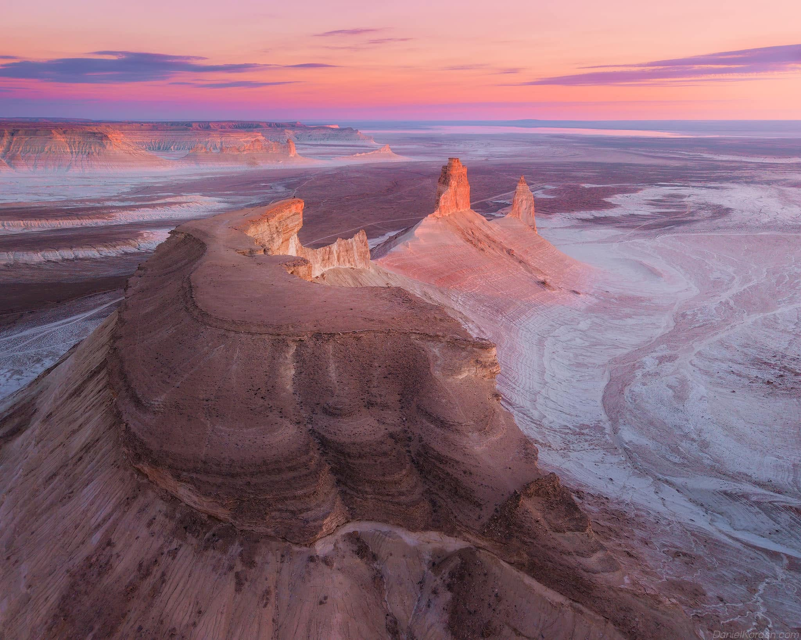

Bozhyra
is one of the most famous natural attractions near Aktau. It is known for its impressive white cliffs, unusual rock formations and beautiful desert landscapes. Visitors can explore the area, enjoy amazing views and take many memorable photographs. Bozhyra is especially popular with people who love nature and outdoor adventures.